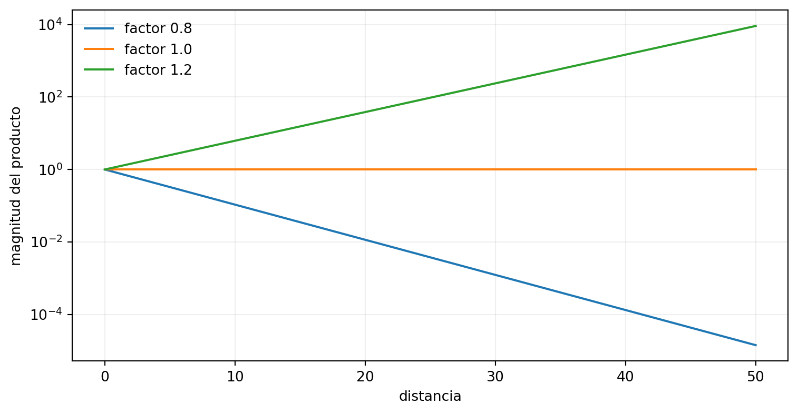
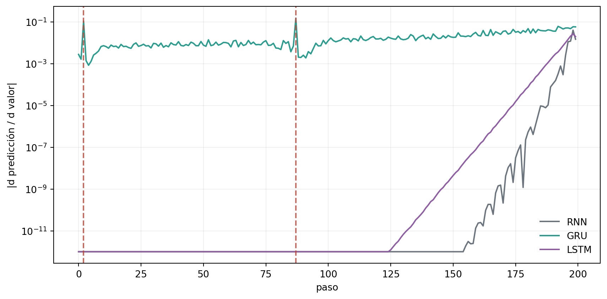
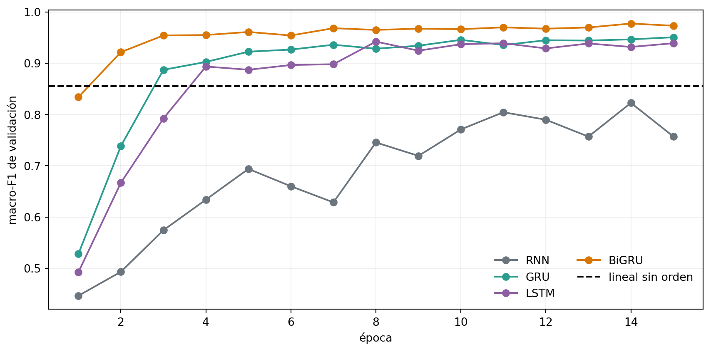

Problema: clasificar o resumir una secuencia cuando la señal relevante apareció muchos pasos antes y una RNN simple debe multiplicar transformaciones para recuperarla.
9.1 Cuando compartir pesos no basta
El Capítulo 8 mostró que una RNN procesa una semana con los mismos parámetros en cada hora. También dejó una pregunta abierta: ¿qué ocurre cuando la pérdida final depende de información distante? El gradiente debe recorrer toda la cadena de estados, y compartir pesos no garantiza que la señal sobreviva.
LSTM y GRU incorporan compuertas que aprenden cuánto conservar, escribir y exponer (Hochreiter y Schmidhuber 1997; Cho et al. 2014). Primero controlaremos la distancia en una tarea sintética. Después clasificaremos dígitos árabes hablados, cuyas secuencias tienen longitudes diferentes.
NotaObjetivos de aprendizaje
Al terminar este capítulo podrás:
relacionar productos de Jacobianos con gradientes que se atenúan o crecen;
interpretar e implementar las compuertas de LSTM y GRU;
comprobar celdas manuales contra nn.LSTM y nn.GRU;
construir lotes con padding, máscaras y secuencias empacadas;
distinguir procesamiento causal y bidireccional;
comparar arquitecturas con presupuesto, semillas y test bloqueado; y
decidir entre desempeño, latencia y disponibilidad de contexto.
CPU y un hilo reducen variación local, pero los segundos no son comparables entre máquinas. El laboratorio usa modelos pequeños y no requiere paquetes adicionales a los del libro.
9.3 Una tarea donde la distancia es controlable
Construiremos secuencias con dos canales. El primero contiene valores uniformes entre cero y uno. El segundo marca dos posiciones: una en el primer 10% y otra entre el primer y segundo tercio. La salida es la suma de los dos valores marcados. Todo lo demás es distractor.
Figura 9.1: Tarea de suma marcada: dos valores tempranos deben llegar a la salida final.
Predecir siempre 1 es una línea base razonable: cada valor marcado tiene media 0,5. Un modelo que solo aprende esa constante tendrá RMSE cercano a \(\sqrt{1/6}\approx0{,}408\).
9.4 Por qué el gradiente recorre una cadena
Para una RNN simple, el efecto de \(h_t\) sobre un estado posterior es
Valores singulares repetidamente menores que uno atenúan la señal; mayores que uno pueden hacerla crecer. Esta dificultad fue formalizada antes de LSTM (Bengio et al. 1994). tanh añade otro factor: cuando se satura, su derivada se aproxima a cero.
fig, axis = plt.subplots(figsize=(8, 4.2))for weight, rows in jacobian_paths.groupby("peso recurrente"): axis.plot(rows["distancia"], rows["producto lineal"], label=f"factor {weight}")axis.set(xlabel="distancia", ylabel="magnitud del producto", yscale="log")axis.grid(alpha=0.2)axis.legend(frameon=False)fig.tight_layout()plt.show()

Figura 9.2: Un factor repetido transforma pequeñas diferencias en atenuación o crecimiento exponencial.
El clipping limita una actualización grande después de calcular el gradiente; no crea una ruta de memoria. Las compuertas modifican la dinámica interna antes de que ese gradiente exista.
La compuerta de olvido \(f_t\) regula la ruta del estado de celda; entrada y salida controlan escritura y exposición (Hochreiter y Schmidhuber 1997). Que exista esa ruta no implica que el optimizador encuentre una solución.
La posición de \(r_t\) respecto al término recurrente cambia entre formulaciones. Implementaremos la usada por nn.GRU, no una mezcla silenciosa de variantes.
Copiamos parámetros a las capas oficiales y comparamos salida, estado y gradientes. La verificación usa precisamente el orden de compuertas documentado por PyTorch (PyTorch Foundation 2026).
La igualdad numérica valida las ecuaciones y el orden de bloques. No demuestra que una celda aprenda la tarea ni que una arquitectura sea superior.
9.8 Comparar con un presupuesto común
Una LSTM con ancho \(H\) tiene cuatro bloques de parámetros; una GRU tiene tres y una RNN uno. Compararlas con el mismo ancho confundiría mecanismo y cantidad de pesos. Elegiremos el mayor ancho que no exceda un presupuesto.
class RecurrentModel(nn.Module):def__init__(self, input_size, hidden_size, output_size, cell, bidirectional=False, ):super().__init__() recurrent_class = {"RNN": nn.RNN, "GRU": nn.GRU, "LSTM": nn.LSTM}[cell]self.recurrent = recurrent_class( input_size, hidden_size, batch_first=True, bidirectional=bidirectional, ) directions =2if bidirectional else1self.head = nn.Linear(hidden_size * directions, output_size)def features_from_state(self, state): hidden = state[0] ifisinstance(state, tuple) else stateifself.recurrent.bidirectional:return torch.cat([hidden[-2], hidden[-1]], dim=1)return hidden[-1]def forward_dense(self, sequence): _, state =self.recurrent(sequence)returnself.head(self.features_from_state(state))def forward(self, padded, lengths):if padded.ndim !=3or lengths.ndim !=1orlen(padded) !=len(lengths):raiseValueError("Formas incompatibles para secuencias y longitudes")if (lengths <=0).any() or lengths.max() > padded.shape[1]:raiseValueError("Longitud fuera del lote acolchado") packed = pack_padded_sequence( padded, lengths.cpu(), batch_first=True, enforce_sorted=False, ) _, state =self.recurrent(packed)returnself.head(self.features_from_state(state))def model_under_budget( input_size, output_size, cell, budget, bidirectional=False): best =Nonefor hidden_size inrange(1, 256): model = RecurrentModel( input_size, hidden_size, output_size, cell, bidirectional ) parameters =sum(parameter.numel() for parameter in model.parameters())if parameters > budget:break best = {"hidden": hidden_size, "parámetros": parameters}return bestsynthetic_configs = { cell: model_under_budget(2, 1, cell, budget=8_000)for cell in ["RNN", "GRU", "LSTM"]}pd.DataFrame(synthetic_configs).T
hidden
parámetros
RNN
86
7827
GRU
49
7841
LSTM
42
7771
El presupuesto iguala grados de libertad de forma aproximada, no capacidad, dinámica ni operaciones por paso. La RNN puede usar más unidades porque cada una cuesta menos.
9.9 Fijar el experimento sintético
Cada arquitectura recibe exactamente los mismos lotes dentro de una semilla. Entrenamos 600 actualizaciones con AdamW, batch 128, clipping de norma 1 y checkpoint cada 50 pasos según RMSE de validación. Validación y test son fijos y no se regeneran por modelo.
ImportanteHipótesis sintética fijada
En longitud 200, consideraremos material una reducción de al menos 30% en RMSE mediano de algún modelo con compuertas frente a la RNN, con ventaja en al menos dos de tres semillas. No cambiaremos inicialización ni número de pasos después de observar qué celda aprende.
mejor celda con compuertas GRU
reducción mediana RMSE a longitud 200 0.450471
semillas ganadas 3
alcanza criterio True
dtype: object
La GRU reduce 45,0% el RMSE mediano de la RNN a longitud 200 y gana en las tres semillas. Su RMSE crece de 0,095 a longitud 20 a 0,228 a longitud 200: las compuertas ayudan, pero la distancia sigue teniendo costo. RNN y LSTM permanecen cerca del baseline constante, alrededor de 0,415 en la secuencia más larga.
La compuerta es una posibilidad de aprendizaje, no una garantía. La LSTM usa la inicialización estándar de PyTorch y el mismo límite de 600 actualizaciones; no añadiremos después un sesgo de olvido favorable para rescatar su resultado.
9.10 Inspeccionar gradientes en una secuencia
Tomamos el primer ejemplo de longitud 200 y derivamos la predicción respecto al canal de valores. Esta figura describe sensibilidad local de una corrida; no es una explicación causal ni una métrica de selección.
fig, axis = plt.subplots(figsize=(9, 4.5))for cell, rows in gradient_frame.groupby("celda", sort=False): axis.plot(rows["paso"], rows["gradiente absoluto"], color=colors[cell], label=cell)for step in marked_steps: axis.axvline(step, color="#C44536", linestyle="--", alpha=0.8)axis.set(xlabel="paso", ylabel="|d predicción / d valor|", yscale="log")axis.grid(alpha=0.2)axis.legend(frameon=False)fig.tight_layout()plt.show()

Figura 9.4: Sensibilidad de la salida al canal de valores en una secuencia de 200 pasos.
9.11 Padding no es información
Las grabaciones reales no tienen la misma longitud. pad_sequence completa el lote, una máscara distingue posiciones válidas y pack_padded_sequence evita que la recurrencia procese el relleno.
toy_sequences = [torch.randn(length, 3) for length in [4, 7, 2]]toy_lengths = torch.tensor([len(sequence) for sequence in toy_sequences])toy_padded = pad_sequence(toy_sequences, batch_first=True)toy_mask = torch.arange(toy_padded.shape[1])[None, :] < toy_lengths[:, None]pd.DataFrame(toy_mask.numpy(), index=["secuencia 1", "secuencia 2", "secuencia 3"])
Figura 9.5: Máscara de posiciones válidas para tres secuencias de distinta longitud.
El último índice de la matriz acolchada no es el último paso real de todas las secuencias. Para clasificación usamos h_n devuelto por la recurrencia empacada.
Spoken Arabic Digit contiene 8.800 secuencias de 13 coeficientes cepstrales MFCC para diez dígitos, producidas por 88 hablantes (Bedda y Hammami 2008). UCI lo distribuye bajo CC BY 4.0. El archivo no contiene audio original.
Cada línea es un frame de 13 MFCC y una línea vacía termina la secuencia. El archivo ordena bloques por dígito, sexo registrado, hablante y repetición. Nos apoyamos en esa documentación y comprobamos todas las cuentas.
def parse_sequence_blocks(raw_bytes): byte_blocks = [] tensor_blocks = [] current = []for line in raw_bytes.splitlines(): line = line.strip()if line: values = [float(value) for value in line.split()]iflen(values) !=13ornot np.isfinite(values).all():raiseValueError("Frame inválido") current.append(line)elif current: byte_blocks.append(b"\n".join(current)) tensor_blocks.append(torch.tensor([ [float(value) for value in row.split()] for row in current ], dtype=torch.float32)) current = []if current: byte_blocks.append(b"\n".join(current)) tensor_blocks.append(torch.tensor([ [float(value) for value in row.split()] for row in current ], dtype=torch.float32))return byte_blocks, tensor_blockswith zipfile.ZipFile(ARCHIVE_PATH) as archive:if archive.testzip() isnotNone:raiseValueError("ZIP corrupto") members = {member.filename for member in archive.infolist()} expected_members = {"Train_Arabic_Digit.txt", "Test_Arabic_Digit.txt","documentation.html", "graphic.jpg", }assert members == expected_members train_bytes = archive.read("Train_Arabic_Digit.txt") test_bytes = archive.read("Test_Arabic_Digit.txt") documentation_text = archive.read("documentation.html").decode("latin-1")documentation_text = html.unescape(re.sub(r"<[^>]+>", " ", documentation_text))documentation_text = re.sub(r"\s+", " ", documentation_text)assert"10 utterances of /0/ from 66 speakers"in documentation_textassert re.search(r"S\s*peakers in the test dataset are different", documentation_text, flags=re.IGNORECASE,)assert sha256(train_bytes).hexdigest() == TRAIN_SHA256assert sha256(test_bytes).hexdigest() == TEST_SHA256train_blocks, train_sequences_all = parse_sequence_blocks(train_bytes)test_blocks, test_sequences_raw = parse_sequence_blocks(test_bytes)assertlen(train_sequences_all) ==6_600assertlen(test_sequences_raw) ==2_200
Hay bloques exactos repetidos, pero ninguno cruza el train oficial y el test. Dentro de train, cada hash repetido pertenece al mismo hablante y dígito.
train_duplicate_groups = train_metadata.groupby("hash")duplicate_hashes = [ name for name, rows in train_duplicate_groups iflen(rows) >1]assertall( train_duplicate_groups.get_group(name)["hablante"].nunique() ==1and train_duplicate_groups.get_group(name)["etiqueta"].nunique() ==1for name in duplicate_hashes)speaker_split_generator = np.random.default_rng(909)validation_speakers = {*(f"train-{index:02d}"for index in speaker_split_generator.choice( np.arange(33), 6, replace=False )),*(f"train-{index:02d}"for index in speaker_split_generator.choice( np.arange(33, 66), 6, replace=False )),}train_metadata["partición"] = np.where( train_metadata["hablante"].isin(validation_speakers),"validación", "ajuste",)test_metadata["partición"] ="test bloqueado"fit_speakers =set( train_metadata.loc[train_metadata["partición"] =="ajuste", "hablante"])assert fit_speakers.isdisjoint(validation_speakers)assertlen(fit_speakers) ==54andlen(validation_speakers) ==12assert train_metadata.groupby(["partición", "etiqueta"]).size().to_dict() == {**{("ajuste", label): 540for label inrange(10)},**{("validación", label): 120for label inrange(10)},}fit_hashes =set(train_metadata.loc[train_metadata["partición"] =="ajuste", "hash"])validation_hashes =set( train_metadata.loc[train_metadata["partición"] =="validación", "hash"])test_hashes =set(test_metadata["hash"])duplicate_audit = pd.Series({"duplicados adicionales en train": int(train_metadata["hash"].duplicated().sum()),"duplicados adicionales en test": int(test_metadata["hash"].duplicated().sum()),"hashes ajuste-validación": len(fit_hashes & validation_hashes),"hashes train-test": len(set(train_metadata["hash"]) & test_hashes),})assert duplicate_audit[["hashes ajuste-validación", "hashes train-test"]].sum() ==0duplicate_audit
duplicados adicionales en train 82
duplicados adicionales en test 25
hashes ajuste-validación 0
hashes train-test 0
dtype: int64
Los 12 hablantes de validación se eligen con semilla 909 antes de entrenar e incluyen seis de cada sexo registrado; no son los últimos ordinales del archivo. El test oficial contiene otros 22 hablantes según la documentación, pero sus identificadores reales no están publicados. No podemos comprobar identidad acústica a partir de MFCC ni inferir categorías demográficas más amplias.
Figura 9.6: Distribución de longitudes por partición y sexo registrado.
9.15 Estandarizar solo con frames de ajuste
fit_indices = train_metadata.index[train_metadata["partición"] =="ajuste"].to_numpy()validation_indices = train_metadata.index[ train_metadata["partición"] =="validación"].to_numpy()fit_frames = torch.cat([train_sequences_all[index] for index in fit_indices])frame_mean = fit_frames.mean(dim=0)frame_std = fit_frames.std(dim=0, unbiased=False).clamp_min(1e-6)def standardize_sequences(sequences):return [(sequence - frame_mean) / frame_std for sequence in sequences]fit_sequences = standardize_sequences([ train_sequences_all[index] for index in fit_indices])validation_sequences = standardize_sequences([ train_sequences_all[index] for index in validation_indices])test_sequences = standardize_sequences(test_sequences_raw)fit_targets = train_metadata.loc[fit_indices, "etiqueta"].tolist()validation_targets = train_metadata.loc[validation_indices, "etiqueta"].tolist()test_targets = test_metadata["etiqueta"].tolist()assert torch.allclose( torch.cat(fit_sequences).mean(0), torch.zeros(13), atol=1e-5)
9.16 Construir datasets y lotes empacados
class SequenceDataset(Dataset):def__init__(self, sequences, targets):iflen(sequences) !=len(targets) ornot sequences:raiseValueError("Secuencias y objetivos incompatibles")ifany( sequence.ndim !=2orlen(sequence) ==0for sequence in sequences ):raiseValueError("Cada secuencia debe ser una matriz no vacía")self.sequences = sequencesself.targets = targetsdef__len__(self):returnlen(self.sequences)def__getitem__(self, index):returnself.sequences[index], self.targets[index], indexdef collate_sequences(batch): sequences, targets, indices =zip(*batch) lengths = torch.tensor([len(sequence) for sequence in sequences]) padded = pad_sequence(sequences, batch_first=True)return ( padded, lengths, torch.tensor(targets, dtype=torch.long), torch.tensor(indices, dtype=torch.long), )fit_dataset = SequenceDataset(fit_sequences, fit_targets)validation_dataset = SequenceDataset(validation_sequences, validation_targets)test_dataset = SequenceDataset(test_sequences, test_targets)
9.17 Una línea base sin orden
La línea base resume cada secuencia mediante media y desviación de los 13 MFCC, más log-longitud: 27 atributos. Un clasificador lineal sobre esos resúmenes puede ganar sin conocer el orden de los frames.
Este baseline obliga a las redes recurrentes a superar estadísticas globales, no solo el azar de diez clases. Alcanza macro-F1 0,855 en los 12 hablantes de validación.
9.18 Predeclarar los protocolos reales
Comparamos RNN, GRU y LSTM unidireccionales, más una GRU bidireccional. Esta última puede usar la grabación completa; no serviría sin esperar el final (Schuster y Paliwal 1997). Todos quedan bajo 12.000 parámetros.
Entrenaremos como máximo 15 épocas con AdamW, batch 128 y clipping de norma 1. Cada corrida conserva el checkpoint de mayor macro-F1 de validación; un empate se resuelve por menor entropía cruzada.
ImportanteHipótesis y selección antes de test
Compuertas serán materialmente útiles si la mejor GRU/LSTM supera la RNN en al menos 0,03 de macro-F1 mediano y gana dos de tres semillas pareadas.
Bidireccionalidad será material si BiGRU supera GRU en al menos 0,02 de mediana.
Elegiremos el mayor macro-F1 mediano. Protocolos a menos de 0,01 se resolverán por menor latencia; diferencias de latencia menores al 10% se resolverán por menos parámetros.
Solo el protocolo elegido y la línea base abrirán el test oficial.
real_runs = {}validation_rows = []for protocol in REAL_PROTOCOLS:for seed in PAIR_SEEDS: run = train_real_protocol(protocol, seed) real_runs[(protocol, seed)] = run validation_rows.append({"protocolo": protocol,"semilla": seed,"macro-F1": run["best"]["macro_f1"],"exactitud": run["best"]["accuracy"],"loss": run["best"]["loss"],"época": run["best_epoch"],"segundos": run["seconds"],"ms por secuencia": run["latency_ms"],"hidden": real_configs[protocol]["hidden"],"parámetros": real_configs[protocol]["parámetros"], })print(f"{protocol:5s} | semilla {seed} | "f"F1 {run['best']['macro_f1']:.3f} | {run['seconds']:.1f} s" )validation_results = pd.DataFrame(validation_rows)validation_results
RNN | semilla 17 | F1 0.788 | 12.0 s
RNN | semilla 29 | F1 0.823 | 13.3 s
RNN | semilla 43 | F1 0.793 | 14.1 s
GRU | semilla 17 | F1 0.944 | 21.7 s
GRU | semilla 29 | F1 0.951 | 23.8 s
GRU | semilla 43 | F1 0.936 | 21.0 s
LSTM | semilla 17 | F1 0.947 | 25.4 s
LSTM | semilla 29 | F1 0.942 | 28.2 s
LSTM | semilla 43 | F1 0.958 | 32.7 s
BiGRU | semilla 17 | F1 0.975 | 32.0 s
BiGRU | semilla 29 | F1 0.977 | 37.1 s
BiGRU | semilla 43 | F1 0.974 | 34.7 s
protocolo
semilla
macro-F1
exactitud
loss
época
segundos
ms por secuencia
hidden
parámetros
0
RNN
17
0.787824
0.784167
0.728403
11
12.031841
0.024805
97
11844
1
RNN
29
0.822592
0.822500
0.631906
14
13.332400
0.026279
97
11844
2
RNN
43
0.792664
0.792500
0.693424
12
14.137705
0.022303
97
11844
3
GRU
17
0.944261
0.944167
0.256412
12
21.721793
0.027337
54
11728
4
GRU
29
0.950653
0.950833
0.272729
15
23.810788
0.029809
54
11728
5
GRU
43
0.935856
0.935833
0.267294
13
20.978078
0.024846
54
11728
6
LSTM
17
0.946952
0.946667
0.211764
14
25.384119
0.035346
46
11694
7
LSTM
29
0.942251
0.942500
0.256051
8
28.239590
0.037455
46
11694
8
LSTM
43
0.957508
0.957500
0.184008
14
32.730525
0.040970
46
11694
9
BiGRU
17
0.974935
0.975000
0.092660
11
31.958697
0.037523
36
11746
10
BiGRU
29
0.977445
0.977500
0.062238
14
37.142610
0.040690
36
11746
11
BiGRU
43
0.974040
0.974167
0.087324
12
34.673368
0.041872
36
11746
real_colors = {"RNN": "#6C757D", "GRU": "#2A9D8F","LSTM": "#8E5EA2", "BiGRU": "#D97706",}fig, axis = plt.subplots(figsize=(9, 4.5))for protocol in REAL_PROTOCOLS: history = real_runs[(protocol, REPRESENTATIVE_SEED)]["history"] axis.plot( history["época"], history["macro-F1 validación"], marker="o", color=real_colors[protocol], label=protocol, )axis.axhline( linear_validation_metrics["macro-F1"], color="black", linestyle="--", label="lineal sin orden",)axis.set(xlabel="época", ylabel="macro-F1 de validación")axis.grid(alpha=0.2)axis.legend(frameon=False, ncol=2)fig.tight_layout()plt.show()

Figura 9.7: Curvas de validación de la semilla representativa bajo receta común.
paired_validation = validation_results.pivot( index="semilla", columns="protocolo", values="macro-F1")best_gated_real = validation_summary[ validation_summary["protocolo"].isin(["GRU", "LSTM"])].sort_values("macro_F1_mediano", ascending=False).iloc[0]["protocolo"]gated_delta = paired_validation[best_gated_real] - paired_validation["RNN"]direction_delta = paired_validation["BiGRU"] - paired_validation["GRU"]pd.Series({"mejor celda con compuertas": best_gated_real,"delta mediano frente a RNN": gated_delta.median(),"victorias frente a RNN": int((gated_delta >0).sum()),"compuertas alcanzan criterio": bool( gated_delta.median() >=0.03and (gated_delta >0).sum() >=2 ),"delta mediano BiGRU-GRU": direction_delta.median(),"bidireccionalidad alcanza 0.02": bool(direction_delta.median() >=0.02),})
mejor celda con compuertas LSTM
delta mediano frente a RNN 0.159128
victorias frente a RNN 3
compuertas alcanzan criterio True
delta mediano BiGRU-GRU 0.030674
bidireccionalidad alcanza 0.02 True
dtype: object
La regla distingue una diferencia positiva de una mejora material. Disponer de ambos sentidos tampoco garantiza superar el umbral una vez se reporta su costo. En esta partición, LSTM es la mejor celda unidireccional y mejora 0,159 frente a RNN; gana las tres semillas. BiGRU mejora 0,031 frente a GRU y sí supera el umbral bidireccional fijado.
mejor macro-F1 mediano 0.974935
protocolos dentro de 0.01 BiGRU
protocolo seleccionado BiGRU
latencia mediana ms 0.04069
dtype: object
La tabla aplica el margen de desempeño y el desempate de costo sin consultar test. Una diferencia pequeña de latencia no se interpreta como una propiedad portable a otro equipo. BiGRU es el único protocolo dentro de 0,01 del mejor macro-F1 mediano: alcanza 0,975, con aproximadamente 0,038 ms por secuencia en esta medición.
ImportanteTest se abre después de esta decisión
Arquitecturas, presupuesto, semillas, checkpoints y regla quedaron cerrados. Las comparaciones descartadas no se usarán para tomar otra decisión con test.
El protocolo recurrente seleccionado supera la línea base invariante al orden. Esta comparación no aísla el efecto del orden: también cambian no linealidad, representación y optimización. BiGRU obtiene macro-F1 mediano 0,958, con rango 0,957–0,966; la línea base alcanza 0,883.
El test representa hablantes no usados en ajuste o selección. Una mejora allí no convierte el sistema en un reconocedor general de árabe: solo cubre diez dígitos y las condiciones de esta colección.
9.23 Diagnosticar confusiones y subgrupos
AdvertenciaAnálisis exploratorio después de abrir test
Confusiones, subgrupos y prefijos generan hipótesis sobre estos 22 hablantes. No son confirmaciones independientes y requieren una nueva muestra externa.
Usamos la semilla representativa 29 para visualizar la matriz. Los resúmenes de subgrupos incorporan las tres semillas y dispersión por hablante.
( variable grupo secuencias mínimo_por_dígito \
0 grupo de longitud corta 557 1
1 grupo de longitud larga 517 12
2 grupo de longitud muy corta 582 0
3 grupo de longitud muy larga 544 0
4 sexo registrado femenino 1100 110
5 sexo registrado masculino 1100 110
exactitud_mediana exactitud_mínima exactitud_máxima macro_F1_mediano
0 0.985637 0.982047 0.987433 0.977600
1 0.982592 0.980658 0.994197 0.980827
2 0.967354 0.957045 0.969072 0.721018
3 0.904412 0.900735 0.911765 0.722649
4 0.985455 0.979091 0.989091 0.985391
5 0.934545 0.930909 0.941818 0.935253 ,
median min max
sexo registrado
femenino 1.00 0.81 1.0
masculino 0.97 0.64 1.0)
Los cuartiles no contienen los dígitos en las mismas proporciones, por lo que su macro-F1 no aísla causalmente la longitud. La tabla por hablante evita tratar cien repeticiones de una persona como cien hablantes independientes, pero sigue siendo descriptiva y pequeña. La exactitud mediana baja a 0,904 en secuencias muy largas, frente a 0,968–0,986 en los otros cuartiles. Por sexo registrado, la mediana por secuencia es 0,985 en el grupo femenino y 0,935 en el masculino; entre hablantes individuales el rango llega de 0,81 a 1,00 y de 0,64 a 1,00, respectivamente.
Las categorías de sexo proceden del archivo y son binarias. Sirven para detectar una diferencia descriptiva dentro de esta muestra, no para inferir identidad, causa o desempeño en poblaciones no representadas.
9.24 ¿Cuánto audio debe observarse?
Truncamos cada secuencia al 25%, 50%, 75% y 100%, y volvemos a clasificar con el mismo modelo. No reentrenamos ni seleccionamos con este estrés.
La caída con prefijos muestra que modelos entrenados solo con secuencias completas no se transfieren bien a esta intervención fuera de distribución. No permite localizar cuándo aparece la señal lingüística; para eso habría que entrenar y validar un protocolo online. Macro-F1 mediano pasa de 0,464 con 25% de los frames a 0,577, 0,883 y 0,958 al observar 50%, 75% y 100%.
Figura 9.10: Desempeño al clasificar con fracciones crecientes de cada secuencia.
Una red unidireccional puede actualizarse progresivamente, pero este clasificador se entrenó con secuencias completas. El estrés con prefijos no equivale a un sistema online calibrado.
9.25 Qué permite concluir el experimento
Las compuertas crean rutas de actualización que una RNN simple no posee.
La equivalencia manual evita atribuir resultados a una ecuación mal implementada.
Presupuestos similares hacen visible el costo, aunque no igualan capacidad.
Packing evita que el padding altere el estado recurrente.
Separar hablantes produce una evaluación más exigente que mezclar repeticiones.
Bidireccionalidad usa contexto completo y debe justificarse por disponibilidad.
No permite afirmar que:
toda LSTM aprenda memoria larga por el solo hecho de tener compuertas;
gradientes grandes impliquen generalización o explicación causal;
MFCC permitan auditar ruido, contenido o pronunciación original;
las categorías binarias documentadas describan toda diversidad de hablantes;
clasificar diez dígitos equivalga a reconocer habla continua; ni
un estado con compuertas elimine el cuello de botella de tamaño fijo.
9.26 Limitaciones y condiciones de uso
La tarea sintética favorece actualizaciones selectivas mediante una marca explícita.
Los checkpoints reutilizan validación en cada época.
Los duplicados exactos reducen diversidad efectiva aunque no crucen particiones.
La separación por hablante depende del orden descrito por los autores.
Una sola selección sembrada de 12 hablantes puede favorecer condiciones de grabación particulares; no reemplaza validación cruzada por grupos.
El test oficial tiene 22 hablantes y una sola colección acústica.
Los diagnósticos posteriores a test son exploratorios y reutilizan esos mismos hablantes para varias preguntas.
Los modelos comparados tienen parámetros similares, no operaciones idénticas.
La latencia incluye padding, packing y DataLoader en esta CPU.
Una GRU bidireccional no puede emitir la misma salida antes de recibir el final.
9.27 Cierre
La memoria prolongada es un problema de dinámica y optimización.
LSTM separa estado de celda y estado expuesto; GRU actualiza un solo estado.
Una compuerta aprendida puede conservar información, pero también cerrarse mal.
Padding, máscara y packing cumplen funciones diferentes.
Test por hablante evalúa mejor transferencia que una partición por repetición.
Desempeño, parámetros, latencia y disponibilidad temporal forman una decisión.
9.28 Ejercicios
Calcula los parámetros de RNN, GRU y LSTM para entrada 13 y ancho 32.
Inicializa el sesgo de olvido de LSTM en uno y repite solo el desarrollo sintético, sin usar test para elegir el cambio.
Mueve la segunda marca al 90% de la secuencia y predice cómo cambiará el RMSE.
Compara h_n con output[:, -1] en un lote acolchado sin packing.
Ordena el lote por longitud y usa enforce_sorted=True.
Iguala ancho en vez de parámetros y separa el efecto de capacidad.
Añade una segunda capa recurrente y reporta costo y estabilidad.
Calcula recall por dígito y localiza la confusión más frecuente.
Entrena un modelo específico para prefijos y compara con el estrés actual.
Diseña una partición externa con micrófonos o regiones diferentes.
9.29 Reto
Construye un clasificador de dígitos estrictamente online. Debe definir cuándo puede abstenerse, cómo actualiza estado frame a frame, qué latencia mide y cómo evalúa prefijos sin usar frames futuros. Compara GRU y LSTM bajo el mismo presupuesto, fija una regla antes de abrir un nuevo conjunto de hablantes y reporta exactitud junto con tiempo hasta decisión.
ImportantePuente a atención
RNN, GRU y LSTM todavía comprimen toda la entrada en uno o dos estados finales. El Capítulo 10 preguntará cómo consultar directamente estados relevantes en vez de confiar únicamente en un resumen de tamaño fijo.
Bengio, Yoshua, Patrice Simard, y Paolo Frasconi. 1994. «Learning Long-Term Dependencies with Gradient Descent Is Difficult». IEEE Transactions on Neural Networks 5 (2): 157-66. https://doi.org/10.1109/72.279181.
Cho, Kyunghyun, Bart van Merriënboer, Çağlar Gülçehre, et al. 2014. «Learning Phrase Representations using RNN Encoder–Decoder for Statistical Machine Translation». Proceedings of the 2014 Conference on Empirical Methods in Natural Language Processing, 1724-34. https://doi.org/10.3115/v1/D14-1179.
Schuster, Mike, y Kuldip K. Paliwal. 1997. «Bidirectional Recurrent Neural Networks». IEEE Transactions on Signal Processing 45 (11): 2673-81. https://doi.org/10.1109/78.650093.